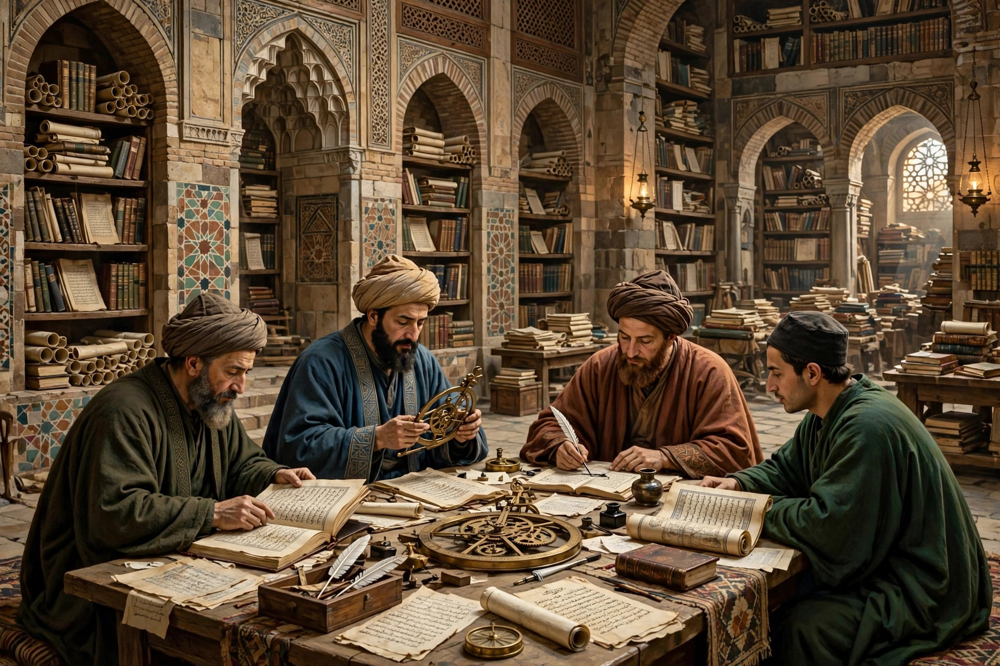

| House of Wisdom Bayt al-Ḥikma | |
|---|---|
 | |
| Location | Baghdad, Abbasid Caliphate |
| Flourished | Late 8th – 9th century (translation movement) |
| Patrons | Caliphs Harun al-Rashid and al-Ma'mun |
| Associated scholars | Al-Khwarizmi; Hunayn ibn Ishaq; the Banu Musa brothers; al-Kindi |
| Fate | Declined from the 10th century; Baghdad sacked by the Mongols, 1258 |
The House of Wisdom (Arabic: بيت الحكمة, Bayt al-Ḥikma) was a major intellectual centre of the Islamic Golden Age, a library and translation institute in Baghdad under the Abbasid caliphs. It is best known for the Graeco-Arabic translation movement it housed, in which scholars rendered Greek, Persian, Syriac, and Sanskrit works of science and philosophy into Arabic. Modern historians debate the institution's precise nature — some describe a formal academy, others a royal library with salaried translators — but agree on its emblematic place in the intellectual flowering of Abbasid Baghdad.
The institution grew out of the caliphal library (khizānat al-ḥikma) of Harun al-Rashid (r. 786–809) and reached its height under his son al-Ma'mun (r. 813–833), whose patronage of rational inquiry and translation was lavish. Baghdad, freshly founded in 762 and rapidly becoming one of the world's largest cities, drew scholars from across the caliphate, aided by the spread of cheap paper manufacture learned from Chinese techniques.
Under the House of Wisdom's auspices, teams of translators — the most famous led by the Nestorian Christian physician Hunayn ibn Ishaq and his son Ishaq ibn Hunayn — systematically translated the works of Aristotle, Plato, Galen, Hippocrates, Euclid, Ptolemy, and many others, often through Syriac intermediaries and with careful revision against multiple manuscripts. Persian astronomical tables and Indian mathematics and medicine were translated as well. Patronage came not only from caliphs but from courtiers and scholarly dynasties such as the Banu Musa brothers, three sons of a court astronomer who sponsored translators and wrote on mechanics and geometry.
The mathematician Muhammad ibn Musa al-Khwarizmi worked in Baghdad in this milieu: his treatise on al-jabr gave algebra its name, and the Latinised form of his own name gave us "algorithm"; his works helped spread Hindu-Arabic numerals and Indian astronomical methods. The philosopher al-Kindi, astronomers such as al-Farghani, and the physician-translators of the Bukhtishu family were among the many figures of the movement.
Caliphal patronage of translation waned in the 10th century, and intellectual activity in Baghdad dispersed to private libraries and other cities. Whatever remained of the great collections perished in Hulagu's Mongol sack of Baghdad in 1258. The translations made in the House of Wisdom's era, however, preserved and extended classical science, and through later Latin translations from Arabic they became foundational for medieval European universities.
See also: Al-Khwarizmi · Ibn Sina · Baghdad · Islamic Golden Age